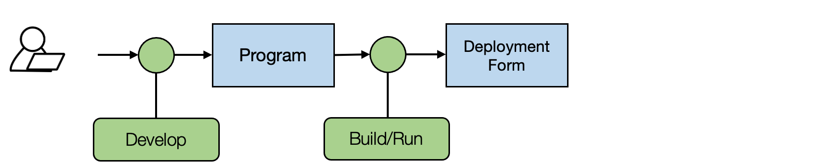
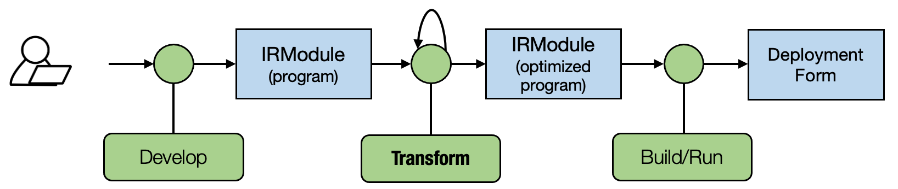

03 张量程序抽象案例研究：TensorIR¶
参考资料
-
英文课程主页 https://mlc.ai/summer22/ 英文课程材料 https://mlc.ai/index.html
-
中文课程主页 https://mlc.ai/summer22-zh/ 中文课程材料 https://mlc.ai/zh/index.html
TensorIR 是标准机器学习编译框架 Apache TVM 中使用的张量程序抽象。
使用张量程序抽象的主要目的是表示循环和相关的硬件加速选择，如多线程、特殊硬件指令的使用和内存访问。
张量函数抽象 - TensorIR实例¶
对于两个大小为128×128的矩阵 A 和 B，进行如下两步的张量计算：一个线性层（矩阵乘法）与一个 ReLU 激活层。 $$ Y_{i,j} = \sum_k{A_{i,k}×{B_{k,j}}} $$
NumPy表示¶
dtype = "float32"
a_np = np.random.rand(128, 128).astype(dtype)
b_np = np.random.rand(128, 128).astype(dtype)
# a @ b is equivalent to np.matmul(a, b)
c_mm_relu = np.maximum(a_np @ b_np, 0)
NumPy实现mm_relu¶
def lnumpy_mm_relu(A: np.ndarray, B: np.ndarray, C: np.ndarray):
Y = np.empty((128, 128), dtype="float32")
for i in range(128):
for j in range(128):
for k in range(128):
if k == 0:
Y[i, j] = 0
Y[i, j] = Y[i, j] + A[i, k] * B[k, j]
for i in range(128):
for j in range(128):
C[i, j] = max(Y[i, j], 0)
TensorIR 实现mm_relu¶
下面的代码块展示了 mm_relu 的 TensorIR 实现。这里的代码是用一种名为 TVMScript 的语言实现的，它是一种嵌入在 Python AST 中的特定领域方言。
@tvm.script.ir_module
class MyModule:
@T.prim_func
def mm_relu(A: T.Buffer[(128, 128), "float32"],
B: T.Buffer[(128, 128), "float32"],
C: T.Buffer[(128, 128), "float32"]):
T.func_attr({"global_symbol": "mm_relu", "tir.noalias": True})
Y = T.alloc_buffer((128, 128), dtype="float32")
for i, j, k in T.grid(128, 128, 128):
with T.block("Y"):
vi = T.axis.spatial(128, i)
vj = T.axis.spatial(128, j)
vk = T.axis.reduce(128, k)
with T.init():
Y[vi, vj] = T.float32(0)
Y[vi, vj] = Y[vi, vj] + A[vi, vk] * B[vk, vj]
for i, j in T.grid(128, 128):
with T.block("C"):
vi = T.axis.spatial(128, i)
vj = T.axis.spatial(128, j)
C[vi, vj] = T.max(Y[vi, vj], T.float32(0))
TensorIR和NumPy代码对应⭐¶

块和块轴（Block axis）¶
TensorIR 包含一个名为 T.block 的额外结构。块 是 TensorIR 中的基本计算单位。一个块包含一组块轴（vi、vj、vk）和围绕它们定义的计算。
vi = T.axis.spatial(128, i)
vj = T.axis.spatial(128, j)
vk = T.axis.reduce(128, k)
上面三行声明了关于块轴的**关键性质**，语法如下。
[block_axis] = T.axis.[axis_type]([axis_range], [mapped_value])
这三行包含以下信息：
- 定义了
vi、vj、vk应被绑定到的位置（在本例中为i、j和k）； - 声明了
vi、vj、vk的原始范围（T.axis.spatial(128, i)中的128）； - 声明了块轴的属性（
spatial,reduce）。
轴属性标记了轴与正在执行的计算之间的关系。

块 Y 通过读取来自 A[vi, vk] 和 B[vk, vj] 的值来计算结果 Y[vi, vj]，并对所有可能的 vk 执行求和。 在这个特定示例中，如果我们将 vi、vj 固定为 (0, 1)，并对 vk in range(0, 128) 执行块 Y，我们可以独立于其他可能的位置（具有不同 vi, vj 值的位置）有效地计算 C[0, 1]。我们可以称 vi、vj 为**空间轴**，涉及归约（vk）的轴被命名为**归约轴**。
函数属性和装饰器¶
函数属性信息包含关于函数的额外信息。
T.func_attr({"global_symbol": "mm_relu", "tir.noalias": True})
@tvm.script.ir_module 和 @T.prim_func 这两个装饰器用于表示对应部分的类型。
@tvm.script.ir_module 表示 MyModule 是一个 IRModule。IRModule 是在机器学习编译中保存张量函数集合的容器对象。
小结¶
到目前为止，我们一同看过了一个 TensorIR 程序示例，并涵盖了大部分元素，包括：
- 参数和中间临时内存中的缓冲区声明；
- For 循环迭代；
- 块和块轴属性。
张量函数变换¶
在实践中，可以有多种方法来实现相同的功能，并且每种实现都可能导致不同的性能。
# 方法1
def lnumpy_mm_relu(A: np.ndarray, B: np.ndarray, C: np.ndarray):
Y = np.empty((128, 128), dtype="float32")
for i in range(128):
for j in range(128):
for k in range(128):
if k == 0:
Y[i, j] = 0
Y[i, j] = Y[i, j] + A[i, k] * B[k, j]
for i in range(128):
for j in range(128):
C[i, j] = max(Y[i, j], 0)
# 方法2
def lnumpy_mm_relu_v2(A: np.ndarray, B: np.ndarray, C: np.ndarray):
Y = np.empty((128, 128), dtype="float32")
for i in range(128):
for j0 in range(32):
for k in range(128):
for j1 in range(4):
j = j0 * 4 + j1
if k == 0:
Y[i, j] = 0
Y[i, j] = Y[i, j] + A[i, k] * B[k, j]
for i in range(128):
for j in range(128):
C[i, j] = max(Y[i, j], 0)
c_np = np.empty((128, 128), dtype=dtype)
lnumpy_mm_relu_v2(a_np, b_np, c_np)
np.testing.assert_allclose(c_mm_relu, c_np, rtol=1e-5)
# 方法3
def lnumpy_mm_relu_v3(A: np.ndarray, B: np.ndarray, C: np.ndarray):
Y = np.empty((128, 128), dtype="float32")
for i in range(128):
for j0 in range(32):
# Y_init
for j1 in range(4):
j = j0 * 4 + j1
Y[i, j] = 0
# Y_update
for k in range(128):
for j1 in range(4):
j = j0 * 4 + j1
Y[i, j] = Y[i, j] + A[i, k] * B[k, j]
# C
for j1 in range(4):
j = j0 * 4 + j1
C[i, j] = max(Y[i, j], 0)
c_np = np.empty((128, 128), dtype=dtype)
lnumpy_mm_relu_v3(a_np, b_np, c_np)
np.testing.assert_allclose(c_mm_relu, c_np, rtol=1e-5)
机器学习编译流程¶
标准开发过程：

机器学习编译流程：

机器学习编译流程的主要区别在于 IRModule（程序）之间的程序变换。所以我们不仅可以通过开发（通过手动编写代码【TVMScript】或生成代码【张量表达式】）提出程序变体，还可以通过变换张量程序来获得变体。